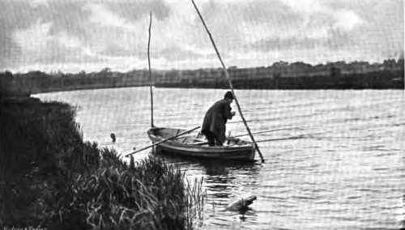
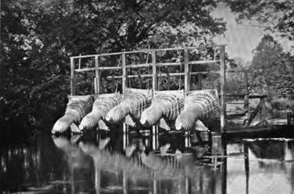
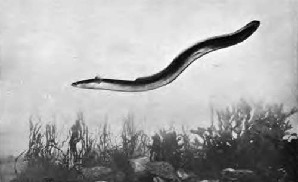
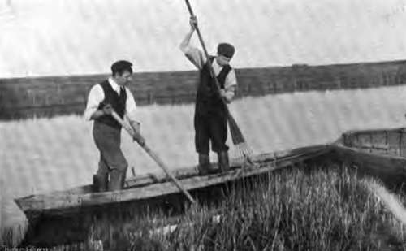
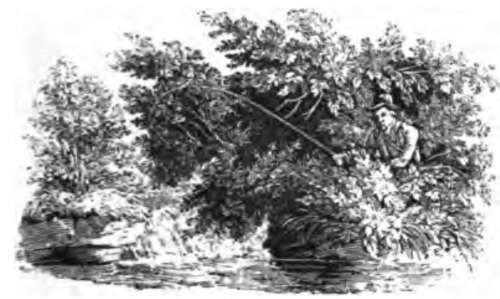
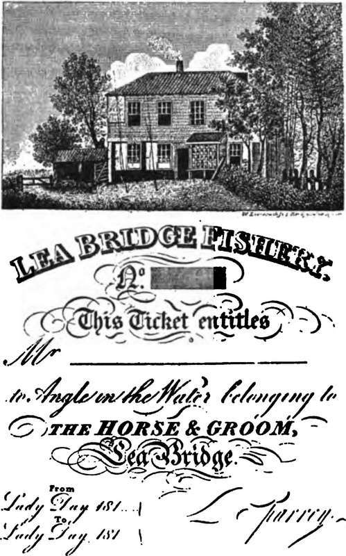

Chapter XXI. The Eels (Anguillide)
Description
This section is from the book "Fishing", by Horace G. Hutchinson. Also available from Amazon: Fishing.
Chapter XXI. The Eels (Anguillide)
The eel and the conger are the well-known British representatives of a large sub-order of Teleostean fishes, known as Apodes^ on account of the constant absence of the ventral or pelvic fins. It is, however, not the absence of these fins that has necessitated the removal of the eels and their allies from the other soft-finned Teleosteans with a pneumatic duct to the air-bladder, but rather the anomalous condition of the shoulder-girdle, which, instead of being suspended from the skull as in nearly all bony fishes, is remote from it and connected by ligament with the anterior vertebrae, and the reduction in the bones of the upper jaw, the praemaxillary bones, which in other fishes are situated before or between the maxillaries, being absent, the anterior or median teeth of the upper jaw corresponding to the vomerine teeth of other fishes, Salmonids, for example (see vol. i., fig. 5, p. 470). The apodes, or eels, may be further defined as elongate, serpentiform fishes, with naked skin, or with minute scales embedded in the skin, the bones of the gill-cover small and completely hidden under the integument, narrow or minute gill-openings, very numerous vertebrae (up to 225); and with the vertical fins, if present, confluent behind or separated by the projecting tip of the tail. The ovaries do not form closed sacs, the ova dropping into the body cavity, as is also the case with the Salmonids.
The Anguillid* are a large family, nearly 150 living species being known, of which about one-third are deep-sea forms, occurring down to 2500 fathoms.
Scanty fossil remains, referable to recent genera or scarcely different from them, are known from the Eocene of Europe; whilst the Cretaceous genus Urenchelys, from England and the Lebanon, is particularly interesting as representing a more generalised type, from which our modern eels appear to have been derived.
The eel (Anguilla vulgaris), the form of which is too well known to require description, has the body covered with small, more or less lineal rudimentary scales embedded in the skin, arranged in small groups, which are placed obliquely at right angles to one another, forming a curious pattern ; but these scales are so small that they escape the notice of the superficial observer: hence eels have been improperly included among the fishes forbidden as food by the Mosaic prescriptions. Our British species has a very wide distribution, being found over the greater part of Europe, North Africa, Temperate Asia, and North America east of the Rocky Mountains,
Mexico, and the West Indies. Its record from Australia and New Zealand is perhaps due to the imperfection of our knowledge of the specific characters. It is not found in the Black Sea nor in the rivers flowing into it, owing, no doubt, to the hydro-sulphuric nature of the bottom of that sea, to the depths of which, as we now know, these fish would have to resort for breeding.
The mode of propagation of the eel long remained a mystery, from the fact that individuals found in fresh water never show ripe genital glands. The idea had been entertained of their being hermaphrodite, and internal parasites had also given rise to the belief in their viviparous nature. The genital glands of the female were first investigated by Rathke in 1838, but it was not until 1874 that those of the male were discovered by Syrski, and shortly after fully described by L. Jacoby, who, in his final contribution to the subject, concluded that eels need salt water for the development of their organs of generation, and that this development takes place, not near the coast, but farther out in deep water. As a rule, it is not until the fifth or sixth year that the eels go to the sea, in autumn, for the purpose of propagation, which takes place at great depths, at least 200 fathoms. Males have been observed to precede the females. The breeding season over, the eels do not return to fresh waters, but are believed to die soon after. The eggs were discovered by Raffaele in 1888 in the Gulf of Naples, and shortly after Grassi and Calan-druccio finally settled the question of the breeding and development of the fish from observations made in the Mediterranean. Their conclusions are thus summed up: " The common eel matures in the depths of the sea, where it acquires larger eyes than are ever observed in individuals which have not yet migrated to deep water. The abysses of the sea are its spawning places; its eggs float in the sea water. In developing from the egg, it undergoes a metamorphosis, it passes through a larval form denominated Leptocephalus brevirostris " These Lepto-cephali, band-shaped, transparent creatures, about 2J inches long, with a very small head, are rarely found on the coasts. What length of time the development requires is not yet fully established, since most of the specimens studied by Grassi and Calandruccio were obtained from the stomach of the sun-fish (Orthagoriscus mold) in the Straits of Messina; but it is believed that the young eels, or " elvers," about 2 inches long, which ascend our rivers in such prodigious numbers in spring and summer (" eel-fairs ") are already one year old.
Some eels apparently spend their whole life in fresh waters, but they are barren. A specimen was kept in confinement in the family of the French naturalist, Desmarest, for upwards of forty years, growing to a length of 4½ feet, being already of large size at the time of its capture. Eels are extremely voracious, and endowed with an extraordinary tenacity of life; they can live for many hours out of the water, and are often met with at night creeping through the grass of meadows from one pond or stream to another.
44.- An Old Hand.
45.- Eel Bucks On Magpie Island
The conger (Conger vulgaris) bears a great superficial resemblance to the eel, but differs in some important characters of the skeleton, and externally in the total absence of scales or their rudiments, in the extension far forward, almost to above the gill-opening, of the dorsal fin, and in the dark border of this fin as well as of the anal, with which it is continuous. It far surpasses the eel in size, attaining sometimes a length of over 8 feet, and a weight of over 100 lbs.
The conger is entirely a salt-water fish, and it has an extremely wide range of distribution, occurring on all the coasts of Europe, North and North-west Africa, the Atlantic coasts of North and South America, and also in Japan, the Malay Archipelago, Australia, a^id Tasmania. Its food consists of all sorts of fish, including its own species, large crustaceans, and cephalopod molluscs.
Twenty-five years ago, very little was known of the life history of the conger. The ripe male was discovered in 1880 by Dr. Otto Hermes, at the Berlin Aquarium, and much has been done since in the way of observations on the breeding and transformations, especially by Mr. J. T. Cunningham in this country. The males do not grow to the same large size as the females (all specimens over 2 feet 8 inches being females), which appear to be more numerous. Breeding takes place at great depths, after which the individuals die, and the floating ova remain at a great depth, and only exceptionally rise to the surface. No eggs have ever been found on our coasts. The young undergo a series of metamorphoses as in the eel, the larval forms having been described long ago as Leptocephalus morrisii. This larva, which has several times been found on the British coasts, is considerably larger than the perfect young into which it develops-Leptocephali of 5 inches may become young congers of no more than 3 inches.
The biology of the eel and conger embraces an enormous literature. The following general recent accounts should be consulted:-
L. Jacoby, Die Aalfrage (Berlin, 1880). Translated in Rep. U.S. Fish. Comm., 1882, p. 463.
J. T. Cunningham, " On the Reproduction and Development of the Conger." Journ. Mar. Biol. Ass. (2) ii., 1891, p. 16.
H. C. Williamson, " On the Reproduction of the Eel."
Rep. Fishery Board Scotland, xii., pt. 3, 1894, p. 192.
G. B. Grassi, " The Reproduction and Metamorphosis of the Common Eel." Proc. Roy. Soc., lx., 1896, p. 260, and Quart. Journ. Micr. xxxix., 1896, p. 371.
46.- A Swimming Eel.
47.- Eel Spearing.
C. H. Eigenmann, " The Solution of the Eel Question."
Tr. Amer. Micr. Soc., xxiv., 1902, p. 5.
For a summary of our knowledge of the larval forms of European species, cf. J. T. Cunningham, Journ. Mar. Biol. Ass. (2) Hi., 1895, p. 278.

Continue to: